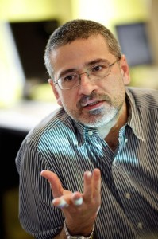

Complex Systems Society
Complex Systems SocietyAlessandro Vespignani elected president of the Complex Systems Society
Alessandro Vespignani, one of the most active and distinguished researchers in the complex systems community, has been elected president of the Complex Systems Society by the CSS Council, on the 3rd of October, 2012.
Alessandro Vespignani

Sternberg Distinguished University Professor, Department of Physics
College of Computer and Information Sciences
Bouve' College of Health Sciences
Northeastern University
Mail: 132-B Nightingale Hall
Northeastern University · 360 Huntington Ave., Boston, Massachusetts 02115
Email: a.vespignani[at]neu[dot]edu
Homepage: http://www.mobs-lab.org/alessandro-vespignani.html
Biography
Prof. Vespignani received his undergraduate degree and Ph.D., both in physics and both from the University of Rome “La Sapienza,” in 1990 and 1993 respectively. He completed his postdoctoral research at Yale University and Leiden University. Prof. Vespignani worked at the International Center for Theoretical Physics (UNESCO) in Trieste and at the University of Paris-Sud in France as a member of the National Council for Scientific Research (CNRS) before moving to Indiana University in 2004. Before joining Northeastern University Vespignani was J.H.Rudy Professor of Informatics and Computing at Indiana University and serving as the Director of the Center for Complex Networks and Systems Research and the Associate Director of the Pervasive Technology Institute.
Research Highlight
Vespignani has worked in a number of areas of non-equilibrium particle systems, statistical physics and computational sciences, including characterization of non-equilibrium phase transitions, fractal growth and selforganized criticality. Recently Vespignani’s research activity focuses on the interdisciplinary application of statistical and numerical simulation methods in the analysis of epidemic and spreading phenomena and the study of biological, social and technological networks. For several years he has been working on the characterization and modeling of the Internet, the WWW and large-scale information networks. He is now focusing his research activity in modeling the spatial spread of epidemics, including the realistic and data-driven computational modeling of emerging infectious diseases, the resilience of complex networks and the behavior of techno-social systems.
Vespignani has published 130+ peer reviewed papers in top rated scientific journals, including Nature, Science and PNAS that have accrued more than 8,000 citations according to the Thomson Reuters Web of Science database. He is author, together with Romualdo Pastor-Satorras, of the book Evolution and Structure of the Internet. Together with Alain Barrat and Marc Barthelemy he has published in 2008 the monograph Dynamical Processes on Complex Networks. Vespignani is an elected fellow of the American Physical Society and is serving in the board/leadership of a variety of professional association and journals and the Institute for Scientific Interchange Foundation.
CSS Digital Library
The CSS Digital Library provides a collection of documents, including videos, slides, articles and reports concerning events organized in the context of the Complex Systems Society, or by CSS members. Some of the recent collections available are:
- Workshop Aesthetics at the Heart of Science, FET'09, Prague, April 23, 2009
- ECCS'10 Plenary Talks, Lisbon, September 13-17, 2010
- "Young Researchers Session", ECCS'10, Lisbon, September 15, 2010
- 4th French Complex Systems Summer School 2010

CSS Wiki
- Announce an event
- Suggest news
- Create a webpage for an event or a project
- Register your record in the Who's Who
CSS Activities
News
Reports from ECCS11 Bursary Winners
2012-03-06
ASSYST provided 32 bursaries to people to attend ECCS’11. The bursaries provided limited contributions towards the conference fee and/or travel expenses for female scientists, young researchers, and others who would otherwise be unable to attend ...
Workshop on Mathematics for the Dynamics of Multilevel Systems
2012-03-06
The meeting Mathematics for the Dynamics of Multilevel Systems was held at the European Centre for Living Technology, Venice, 26th - 28th February 2012 ...

CSS Agenda - Events and Jobs
ECCS'13 - European Conference on Complex Systems
16 Sep 2013 - 20 Sep 2013